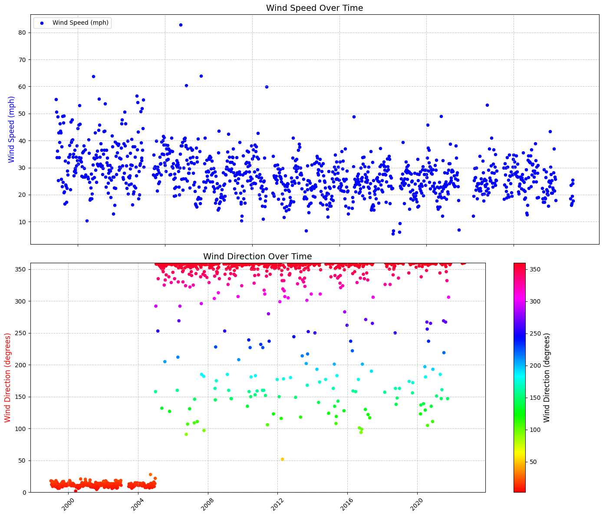
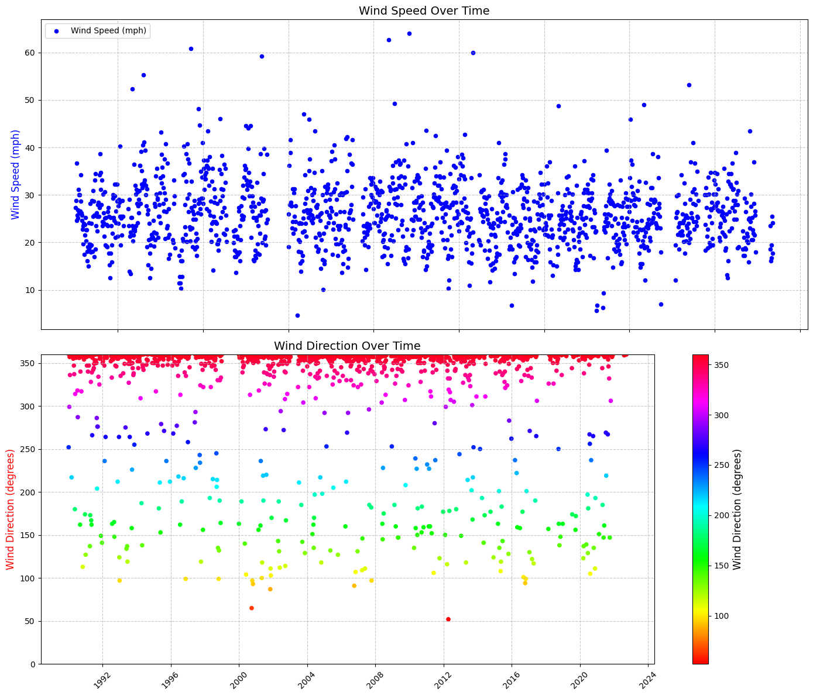
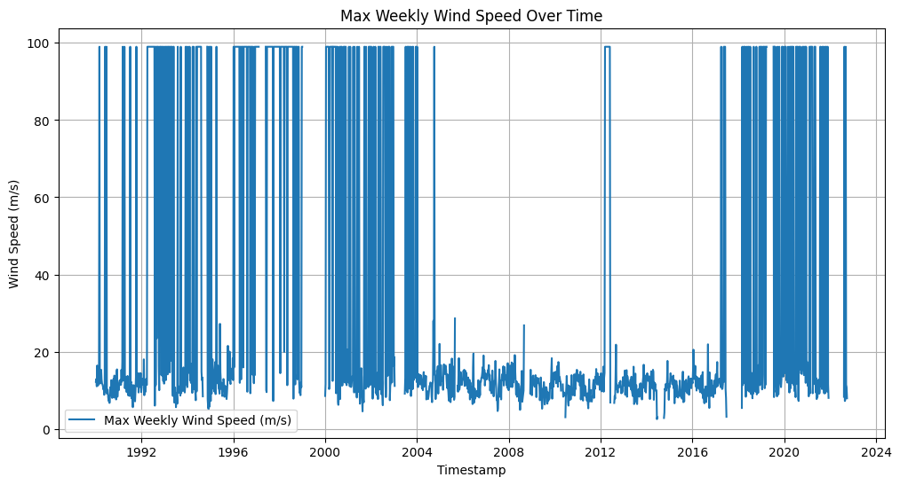
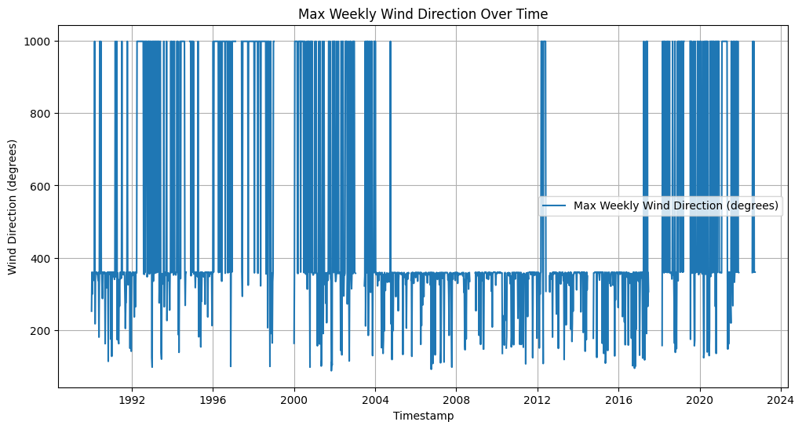
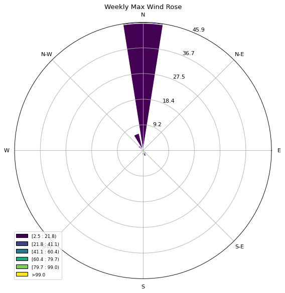
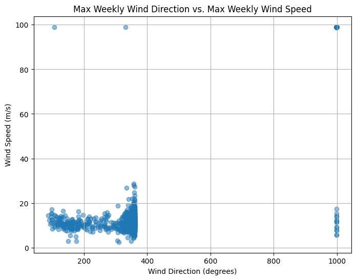

import requests
import pandas as pd
from io import StringIO
from datetime import datetime
import os
# Define the station ID (example: '42001' for Gulf of Mexico buoy)
station_id = '42003'
start_year = 1990
current_year= 2022
#current_year = datetime.now().year
# Create directories for raw data
raw_data_dir = 'input/wind_raw'
os.makedirs(raw_data_dir, exist_ok=True)
# Loop through each year and download the data
for year in range(start_year, current_year + 1):
url = f'https://www.ndbc.noaa.gov/view_text_file.php?filename={station_id}h{year}.txt.gz&dir=data/historical/stdmet/'
print(f"Downloading data for year {year}...")
# Read the data
df = pd.read_csv(url, sep='\s+', header=[0], on_bad_lines='skip', low_memory=False)
# Save each individual file
raw_file_path = os.path.join(raw_data_dir, f"wind_data_{year}.csv")
df.to_csv(raw_file_path, index=False)
display(df.head(2))
<>:16: SyntaxWarning: invalid escape sequence '\s'
<>:16: SyntaxWarning: invalid escape sequence '\s'
C:\Users\mgebremedhin\AppData\Local\Temp\ipykernel_13952\3090090348.py:16: SyntaxWarning: invalid escape sequence '\s'
df = pd.read_csv(url, sep='\s+', header=[0], on_bad_lines='skip', low_memory=False)
Downloading data for year 1990...
| YY | MM | DD | hh | WD | WSPD | GST | WVHT | DPD | APD | MWD | BAR | ATMP | WTMP | DEWP | VIS | |
|---|---|---|---|---|---|---|---|---|---|---|---|---|---|---|---|---|
| 0 | 90 | 1 | 1 | 0 | 206 | 6.9 | 8.7 | 1.6 | 7.7 | 5.7 | 999 | 1016.5 | 25.3 | 26.1 | 999.0 | 99.0 |
| 1 | 90 | 1 | 1 | 1 | 211 | 6.4 | 7.5 | 1.5 | 7.1 | 5.6 | 999 | 1017.3 | 25.3 | 26.1 | 999.0 | 99.0 |
Downloading data for year 1991...
| YY | MM | DD | hh | WD | WSPD | GST | WVHT | DPD | APD | MWD | BAR | ATMP | WTMP | DEWP | VIS | |
|---|---|---|---|---|---|---|---|---|---|---|---|---|---|---|---|---|
| 0 | 91 | 1 | 1 | 0 | 110 | 4.9 | 5.6 | 0.6 | 7.1 | 4.1 | 999 | 1022.8 | 24.3 | 25.1 | 999.0 | 99.0 |
| 1 | 91 | 1 | 1 | 1 | 112 | 5.3 | 6.0 | 0.7 | 6.2 | 4.5 | 999 | 1023.4 | 24.2 | 25.0 | 999.0 | 99.0 |
Downloading data for year 1992...
| YY | MM | DD | hh | WD | WSPD | GST | WVHT | DPD | APD | MWD | BAR | ATMP | WTMP | DEWP | VIS | |
|---|---|---|---|---|---|---|---|---|---|---|---|---|---|---|---|---|
| 0 | 92 | 1 | 1 | 0 | 72 | 5.9 | 8.3 | 0.8 | 4.0 | 3.6 | 999 | 1020.5 | 19.9 | 26.6 | 999.0 | 99.0 |
| 1 | 92 | 1 | 1 | 1 | 67 | 6.4 | 8.4 | 0.8 | 4.5 | 3.6 | 999 | 1020.5 | 20.3 | 26.1 | 999.0 | 99.0 |
Downloading data for year 1993...
| YY | MM | DD | hh | WD | WSPD | GST | WVHT | DPD | APD | MWD | BAR | ATMP | WTMP | DEWP | VIS | |
|---|---|---|---|---|---|---|---|---|---|---|---|---|---|---|---|---|
| 0 | 93 | 1 | 1 | 1 | 41 | 9.5 | 11.0 | 1.3 | 5.3 | 4.8 | 48 | 1018.8 | 23.1 | 26.7 | 999.0 | 4.8 |
| 1 | 93 | 1 | 1 | 2 | 33 | 9.6 | 10.9 | 1.3 | 5.3 | 4.7 | 39 | 1019.3 | 23.1 | 26.6 | 999.0 | 3.9 |
Downloading data for year 1994...
| YY | MM | DD | hh | WD | WSPD | GST | WVHT | DPD | APD | MWD | BAR | ATMP | WTMP | DEWP | VIS | |
|---|---|---|---|---|---|---|---|---|---|---|---|---|---|---|---|---|
| 0 | 94 | 1 | 1 | 0 | 78 | 8.3 | 10.2 | 1.4 | 5.9 | 5.0 | 999 | 1023.8 | 19.8 | 26.3 | 999.0 | 99.0 |
| 1 | 94 | 1 | 1 | 1 | 68 | 8.0 | 10.6 | 1.5 | 5.9 | 5.1 | 999 | 1024.1 | 20.2 | 26.3 | 999.0 | 99.0 |
Downloading data for year 1995...
| YY | MM | DD | hh | WD | WSPD | GST | WVHT | DPD | APD | MWD | BAR | ATMP | WTMP | DEWP | VIS | |
|---|---|---|---|---|---|---|---|---|---|---|---|---|---|---|---|---|
| 0 | 95 | 1 | 1 | 8 | 180 | 1.0 | 99.0 | 99.0 | 99.0 | 99.0 | 999 | 9999.0 | 999.0 | 999.0 | 999.0 | 99.0 |
| 1 | 95 | 1 | 1 | 9 | 180 | 1.0 | 99.0 | 99.0 | 99.0 | 99.0 | 999 | 9999.0 | 999.0 | 999.0 | 999.0 | 99.0 |
Downloading data for year 1996...
| YY | MM | DD | hh | WD | WSPD | GST | WVHT | DPD | APD | MWD | BAR | ATMP | WTMP | DEWP | VIS | |
|---|---|---|---|---|---|---|---|---|---|---|---|---|---|---|---|---|
| 0 | 96 | 1 | 1 | 0 | 184 | 7.8 | 9.2 | 1.16 | 7.14 | 5.19 | 166 | 1008.2 | 25.5 | 26.5 | 999.0 | 99.0 |
| 1 | 96 | 1 | 1 | 1 | 179 | 8.5 | 10.0 | 1.13 | 7.14 | 5.10 | 155 | 1008.4 | 25.5 | 26.5 | 999.0 | 99.0 |
Downloading data for year 1997...
| YY | MM | DD | hh | WD | WSPD | GST | WVHT | DPD | APD | MWD | BAR | ATMP | WTMP | DEWP | VIS | |
|---|---|---|---|---|---|---|---|---|---|---|---|---|---|---|---|---|
| 0 | 97 | 1 | 1 | 0 | 83 | 7.7 | 8.5 | 99.0 | 99.0 | 99.0 | 999 | 1019.3 | 23.1 | 24.2 | 999.0 | 99.0 |
| 1 | 97 | 1 | 1 | 1 | 83 | 7.5 | 8.4 | 99.0 | 99.0 | 99.0 | 999 | 1019.6 | 23.0 | 24.2 | 999.0 | 99.0 |
Downloading data for year 1998...
| YY | MM | DD | hh | WD | WSPD | GST | WVHT | DPD | APD | MWD | BAR | ATMP | WTMP | DEWP | VIS | |
|---|---|---|---|---|---|---|---|---|---|---|---|---|---|---|---|---|
| 0 | 98 | 1 | 1 | 0 | 999 | 99.0 | 99.0 | 99.00 | 99.00 | 99.00 | 999 | 9999.0 | 999.0 | 999.0 | 999.0 | 99.0 |
| 1 | 98 | 1 | 1 | 1 | 26 | 10.8 | 13.1 | 2.07 | 7.14 | 4.32 | 325 | 1028.5 | 999.0 | 26.1 | 999.0 | 99.0 |
Downloading data for year 1999...
| YYYY | MM | DD | hh | WD | WSPD | GST | WVHT | DPD | APD | MWD | BAR | ATMP | WTMP | DEWP | VIS | |
|---|---|---|---|---|---|---|---|---|---|---|---|---|---|---|---|---|
| 0 | 1999 | 1 | 1 | 0 | 999 | 99.0 | 99.0 | 99.00 | 99.00 | 99.00 | 999 | 9999.0 | 999.0 | 999.0 | 999.0 | 99.0 |
| 1 | 1999 | 1 | 1 | 1 | 64 | 6.1 | 8.5 | 0.47 | 4.17 | 3.88 | 70 | 1019.1 | 20.8 | 26.9 | 999.0 | 99.0 |
Downloading data for year 2000...
| YYYY | MM | DD | hh | WD | WSPD | GST | WVHT | DPD | APD | MWD | BAR | ATMP | WTMP | DEWP | VIS | TIDE | |
|---|---|---|---|---|---|---|---|---|---|---|---|---|---|---|---|---|---|
| 0 | 2000 | 1 | 1 | 0 | 159 | 1.5 | 2.1 | 0.46 | 4.17 | 4.02 | 166 | 1019.1 | 23.5 | 25.7 | 999.0 | 99.0 | NaN |
| 1 | 2000 | 1 | 1 | 1 | 0 | 0.0 | 0.0 | 0.47 | 4.17 | 4.04 | 206 | 1019.7 | 23.5 | 25.7 | 999.0 | 99.0 | NaN |
Downloading data for year 2001...
| YYYY | MM | DD | hh | WD | WSPD | GST | WVHT | DPD | APD | MWD | BAR | ATMP | WTMP | DEWP | VIS | TIDE | |
|---|---|---|---|---|---|---|---|---|---|---|---|---|---|---|---|---|---|
| 0 | 2001 | 1 | 1 | 0 | 54 | 2.4 | 4.0 | 0.85 | 6.25 | 4.84 | 325 | 1023.6 | 15.6 | 24.3 | 5.7 | 99.0 | 99.0 |
| 1 | 2001 | 1 | 1 | 1 | 35 | 2.4 | 3.8 | 0.81 | 7.69 | 4.92 | 287 | 1024.3 | 15.7 | 24.4 | 6.0 | 99.0 | 99.0 |
Downloading data for year 2002...
| YYYY | MM | DD | hh | WD | WSPD | GST | WVHT | DPD | APD | MWD | BAR | ATMP | WTMP | DEWP | VIS | TIDE | |
|---|---|---|---|---|---|---|---|---|---|---|---|---|---|---|---|---|---|
| 0 | 2002 | 1 | 1 | 0 | 41 | 9.6 | 11.4 | 1.40 | 5.26 | 4.73 | 31 | 1016.9 | 20.5 | 25.3 | 14.5 | 99.0 | 99.0 |
| 1 | 2002 | 1 | 1 | 1 | 55 | 8.7 | 9.8 | 1.31 | 5.56 | 4.65 | 35 | 1016.5 | 20.5 | 25.3 | 14.4 | 99.0 | 99.0 |
Downloading data for year 2003...
| YYYY | MM | DD | hh | WD | WSPD | GST | WVHT | DPD | APD | MWD | BAR | ATMP | WTMP | DEWP | VIS | TIDE | |
|---|---|---|---|---|---|---|---|---|---|---|---|---|---|---|---|---|---|
| 0 | 2003 | 1 | 1 | 0 | 268 | 11.7 | 13.8 | 3.59 | 8.33 | 5.53 | 165 | 1010.9 | 23.3 | 25.9 | 15.9 | 99.0 | 99.0 |
| 1 | 2003 | 1 | 1 | 1 | 265 | 9.6 | 11.3 | 3.44 | 9.09 | 5.77 | 155 | 1011.2 | 23.3 | 26.2 | 16.4 | 99.0 | 99.0 |
Downloading data for year 2004...
| YYYY | MM | DD | hh | WD | WSPD | GST | WVHT | DPD | APD | MWD | BAR | ATMP | WTMP | DEWP | VIS | TIDE | |
|---|---|---|---|---|---|---|---|---|---|---|---|---|---|---|---|---|---|
| 0 | 2004 | 1 | 1 | 0 | 101 | 5.3 | 6.5 | 1.07 | 5.88 | 4.41 | 134 | 1024.5 | 24.7 | 26.1 | 15.8 | 99.0 | 99.0 |
| 1 | 2004 | 1 | 1 | 1 | 99 | 6.2 | 8.1 | 1.21 | 5.56 | 4.65 | 109 | 1024.8 | 24.6 | 25.9 | 16.3 | 99.0 | 99.0 |
Downloading data for year 2005...
| YYYY | MM | DD | hh | mm | WD | WSPD | GST | WVHT | DPD | APD | MWD | BAR | ATMP | WTMP | DEWP | VIS | TIDE | |
|---|---|---|---|---|---|---|---|---|---|---|---|---|---|---|---|---|---|---|
| 0 | 2005 | 1 | 1 | 0 | 0 | 104 | 10.3 | 12.6 | 2.40 | 7.69 | 6.54 | 111 | 1023.0 | 23.3 | 26.0 | 17.8 | 99.0 | 99.0 |
| 1 | 2005 | 1 | 1 | 1 | 0 | 105 | 10.9 | 12.9 | 2.33 | 8.33 | 6.57 | 123 | 1023.3 | 23.5 | 26.0 | 18.3 | 99.0 | 99.0 |
Downloading data for year 2006...
| YYYY | MM | DD | hh | mm | WD | WSPD | GST | WVHT | DPD | APD | MWD | BAR | ATMP | WTMP | DEWP | VIS | TIDE | |
|---|---|---|---|---|---|---|---|---|---|---|---|---|---|---|---|---|---|---|
| 0 | 2006 | 1 | 1 | 0 | 0 | 124 | 5.2 | 6.4 | 0.81 | 5.56 | 4.59 | 999 | 1015.1 | 23.8 | 24.3 | 23.1 | 99.0 | 99.0 |
| 1 | 2006 | 1 | 1 | 1 | 0 | 133 | 5.5 | 6.4 | 0.73 | 5.26 | 4.39 | 999 | 1015.0 | 23.7 | 25.0 | 23.2 | 99.0 | 99.0 |
Downloading data for year 2007...
| #YY | MM | DD | hh | mm | WDIR | WSPD | GST | WVHT | DPD | APD | MWD | PRES | ATMP | WTMP | DEWP | VIS | TIDE | |
|---|---|---|---|---|---|---|---|---|---|---|---|---|---|---|---|---|---|---|
| 0 | #yr | mo | dy | hr | mn | degT | m/s | m/s | m | sec | sec | degT | hPa | degC | degC | degC | nmi | ft |
| 1 | 2007 | 01 | 01 | 00 | 00 | 185 | 5.7 | 6.9 | 1.56 | 6.67 | 5.45 | 143 | 1017.6 | 26.5 | 26.9 | 24.5 | 99.0 | 99.00 |
Downloading data for year 2008...
| #YY | MM | DD | hh | mm | WDIR | WSPD | GST | WVHT | DPD | APD | MWD | PRES | ATMP | WTMP | DEWP | VIS | TIDE | |
|---|---|---|---|---|---|---|---|---|---|---|---|---|---|---|---|---|---|---|
| 0 | #yr | mo | dy | hr | mn | degT | m/s | m/s | m | sec | sec | deg | hPa | degC | degC | degC | nmi | ft |
| 1 | 2008 | 01 | 01 | 00 | 49 | 110 | 1.5 | 1.8 | 0.67 | 5.56 | 5.15 | 151 | 1018.1 | 24.7 | 24.7 | 24.7 | 99.0 | 99.00 |
Downloading data for year 2009...
| #YY | MM | DD | hh | mm | WDIR | WSPD | GST | WVHT | DPD | APD | MWD | PRES | ATMP | WTMP | DEWP | VIS | TIDE | |
|---|---|---|---|---|---|---|---|---|---|---|---|---|---|---|---|---|---|---|
| 0 | #yr | mo | dy | hr | mn | degT | m/s | m/s | m | sec | sec | degT | hPa | degC | degC | degC | mi | ft |
| 1 | 2008 | 12 | 31 | 23 | 50 | 2 | 4.8 | 6.0 | 0.67 | 4.00 | 3.74 | 358 | 1017.9 | 22.7 | 25.1 | 16.9 | 99.0 | 99.00 |
Downloading data for year 2010...
| #YY | MM | DD | hh | mm | WDIR | WSPD | GST | WVHT | DPD | APD | MWD | PRES | ATMP | WTMP | DEWP | VIS | TIDE | |
|---|---|---|---|---|---|---|---|---|---|---|---|---|---|---|---|---|---|---|
| 0 | #yr | mo | dy | hr | mn | degT | m/s | m/s | m | sec | sec | deg | hPa | degC | degC | degC | nmi | ft |
| 1 | 2009 | 12 | 31 | 23 | 50 | 323 | 3.0 | 4.0 | 0.75 | 5.88 | 4.91 | 118 | 1017.7 | 23.7 | 25.2 | 999.0 | 99.0 | 99.00 |
Downloading data for year 2011...
| #YY | MM | DD | hh | mm | WDIR | WSPD | GST | WVHT | DPD | APD | MWD | PRES | ATMP | WTMP | DEWP | VIS | TIDE | |
|---|---|---|---|---|---|---|---|---|---|---|---|---|---|---|---|---|---|---|
| 0 | #yr | mo | dy | hr | mn | degT | m/s | m/s | m | sec | sec | degT | hPa | degC | degC | degC | mi | ft |
| 1 | 2010 | 12 | 31 | 23 | 50 | 120 | 9.2 | 11.4 | 2.10 | 7.14 | 5.09 | 999 | 1017.3 | 21.5 | 21.1 | 19.6 | 99.0 | 99.00 |
Downloading data for year 2012...
| #YY | MM | DD | hh | mm | WDIR | WSPD | GST | WVHT | DPD | APD | MWD | PRES | ATMP | WTMP | DEWP | VIS | TIDE | |
|---|---|---|---|---|---|---|---|---|---|---|---|---|---|---|---|---|---|---|
| 0 | #yr | mo | dy | hr | mn | degT | m/s | m/s | m | sec | sec | degT | hPa | degC | degC | degC | mi | ft |
| 1 | 2011 | 12 | 31 | 23 | 50 | 112 | 3.3 | 4.1 | 0.27 | 4.00 | 4.07 | 96 | 9999.0 | 999.0 | 999.0 | 999.0 | 99.0 | 99.00 |
Downloading data for year 2013...
| #YY | MM | DD | hh | mm | WDIR | WSPD | GST | WVHT | DPD | APD | MWD | PRES | ATMP | WTMP | DEWP | VIS | TIDE | |
|---|---|---|---|---|---|---|---|---|---|---|---|---|---|---|---|---|---|---|
| 0 | #yr | mo | dy | hr | mn | degT | m/s | m/s | m | sec | sec | degT | hPa | degC | degC | degC | mi | ft |
| 1 | 2012 | 12 | 31 | 23 | 50 | 123 | 6.4 | 8.0 | 1.18 | 5.88 | 4.95 | 90 | 1021.3 | 22.3 | 23.9 | 999.0 | 99.0 | 99.00 |
Downloading data for year 2014...
| #YY | MM | DD | hh | mm | WDIR | WSPD | GST | WVHT | DPD | APD | MWD | PRES | ATMP | WTMP | DEWP | VIS | TIDE | |
|---|---|---|---|---|---|---|---|---|---|---|---|---|---|---|---|---|---|---|
| 0 | #yr | mo | dy | hr | mn | degT | m/s | m/s | m | sec | sec | degT | hPa | degC | degC | degC | mi | ft |
| 1 | 2013 | 12 | 31 | 23 | 50 | 53 | 10.5 | 12.7 | 1.90 | 6.67 | 5.10 | 45 | 1021.6 | 21.2 | 22.9 | 999.0 | 99.0 | 99.00 |
Downloading data for year 2015...
| #YY | MM | DD | hh | mm | WDIR | WSPD | GST | WVHT | DPD | APD | MWD | PRES | ATMP | WTMP | DEWP | VIS | TIDE | |
|---|---|---|---|---|---|---|---|---|---|---|---|---|---|---|---|---|---|---|
| 0 | #yr | mo | dy | hr | mn | degT | m/s | m/s | m | sec | sec | degT | hPa | degC | degC | degC | mi | ft |
| 1 | 2014 | 12 | 31 | 23 | 50 | 65 | 7.7 | 9.0 | 1.33 | 6.25 | 4.66 | 348 | 1021.4 | 22.9 | 23.6 | 20.7 | 99.0 | 99.00 |
Downloading data for year 2016...
| #YY | MM | DD | hh | mm | WDIR | WSPD | GST | WVHT | DPD | APD | MWD | PRES | ATMP | WTMP | DEWP | VIS | TIDE | |
|---|---|---|---|---|---|---|---|---|---|---|---|---|---|---|---|---|---|---|
| 0 | #yr | mo | dy | hr | mn | degT | m/s | m/s | m | sec | sec | degT | hPa | degC | degC | degC | mi | ft |
| 1 | 2015 | 12 | 31 | 23 | 50 | 155 | 3.4 | 5.0 | 0.85 | 7.69 | 5.36 | 210 | 1018.8 | 27.1 | 27.9 | 20.9 | 99.0 | 99.00 |
Downloading data for year 2017...
| #YY | MM | DD | hh | mm | WDIR | WSPD | GST | WVHT | DPD | APD | MWD | PRES | ATMP | WTMP | DEWP | VIS | TIDE | |
|---|---|---|---|---|---|---|---|---|---|---|---|---|---|---|---|---|---|---|
| 0 | #yr | mo | dy | hr | mn | degT | m/s | m/s | m | sec | sec | degT | hPa | degC | degC | degC | mi | ft |
| 1 | 2016 | 12 | 31 | 23 | 50 | 142 | 8.5 | 9.8 | 1.52 | 6.25 | 4.82 | 109 | 1017.7 | 24.7 | 25.5 | 18.2 | 99.0 | 99.00 |
Downloading data for year 2018...
| #YY | MM | DD | hh | mm | WDIR | WSPD | GST | WVHT | DPD | APD | MWD | PRES | ATMP | WTMP | DEWP | VIS | TIDE | |
|---|---|---|---|---|---|---|---|---|---|---|---|---|---|---|---|---|---|---|
| 0 | #yr | mo | dy | hr | mn | degT | m/s | m/s | m | sec | sec | degT | hPa | degC | degC | degC | mi | ft |
| 1 | 2018 | 02 | 25 | 20 | 30 | 145 | 5.0 | 6.7 | 99.00 | 99.00 | 99.00 | 999 | 1018.2 | 25.8 | 26.6 | 21.8 | 99.0 | 99.00 |
Downloading data for year 2019...
| #YY | MM | DD | hh | mm | WDIR | WSPD | GST | WVHT | DPD | APD | MWD | PRES | ATMP | WTMP | DEWP | VIS | TIDE | |
|---|---|---|---|---|---|---|---|---|---|---|---|---|---|---|---|---|---|---|
| 0 | #yr | mo | dy | hr | mn | degT | m/s | m/s | m | sec | sec | degT | hPa | degC | degC | degC | mi | ft |
| 1 | 2019 | 01 | 01 | 00 | 00 | 148 | 5.3 | 6.6 | 99.00 | 99.00 | 99.00 | 999 | 1018.4 | 25.4 | 24.9 | 22.5 | 99.0 | 99.00 |
Downloading data for year 2020...
| #YY | MM | DD | hh | mm | WDIR | WSPD | GST | WVHT | DPD | APD | MWD | PRES | ATMP | WTMP | DEWP | VIS | TIDE | |
|---|---|---|---|---|---|---|---|---|---|---|---|---|---|---|---|---|---|---|
| 0 | #yr | mo | dy | hr | mn | degT | m/s | m/s | m | sec | sec | degT | hPa | degC | degC | degC | mi | ft |
| 1 | 2020 | 01 | 01 | 00 | 00 | 35 | 5.7 | 7.5 | 99.00 | 99.00 | 99.00 | 999 | 1019.3 | 21.5 | 26.8 | 16.3 | 99.0 | 99.00 |
Downloading data for year 2021...
| #YY | MM | DD | hh | mm | WDIR | WSPD | GST | WVHT | DPD | APD | MWD | PRES | ATMP | WTMP | DEWP | VIS | TIDE | |
|---|---|---|---|---|---|---|---|---|---|---|---|---|---|---|---|---|---|---|
| 0 | #yr | mo | dy | hr | mn | degT | m/s | m/s | m | sec | sec | degT | hPa | degC | degC | degC | mi | ft |
| 1 | 2021 | 01 | 01 | 00 | 00 | 126 | 9.3 | 11.3 | 99.00 | 99.00 | 99.00 | 999 | 1014.6 | 999.0 | 25.8 | 999.0 | 99.0 | 99.00 |
Downloading data for year 2022...
| #YY | MM | DD | hh | mm | WDIR | WSPD | GST | WVHT | DPD | APD | MWD | PRES | ATMP | WTMP | DEWP | VIS | TIDE | |
|---|---|---|---|---|---|---|---|---|---|---|---|---|---|---|---|---|---|---|
| 0 | #yr | mo | dy | hr | mn | degT | m/s | m/s | m | sec | sec | degT | hPa | degC | degC | degC | mi | ft |
| 1 | 2022 | 08 | 06 | 21 | 30 | 108 | 6.3 | 8.2 | 99.00 | 99.00 | 99.00 | 999 | 1016.1 | 999.0 | 30.1 | 999.0 | 99.0 | 99.00 |
# Define input and output paths
input_dir = 'input/wind_raw'
output_file = 'input/headers_summary.csv'
# Create a dataframe to store extracted headers
header_data = []
# Loop through each file in the input directory
for file in sorted(os.listdir(input_dir)):
if file.endswith('.csv'):
file_path = os.path.join(input_dir, file)
try:
# Read the file and extract the header rows
with open(file_path, 'r') as f:
header_lines = [next(f).strip() for _ in range(1)] # First two rows
# Store in the list
header_data.append({
'Year': file.split('_')[-1].split('.')[0],
'Header_1': header_lines[0],
})
print(f"Extracted headers for {file}:\n{header_lines}\n")
except Exception as e:
print(f"Failed to extract headers for {file}: {e}")
# Convert the list to a DataFrame
header_df = pd.DataFrame(header_data)
# Save the headers to a CSV file
header_df.to_csv(output_file, index=False)
print(f"\nHeaders saved to '{output_file}'")
Extracted headers for wind_data_1990.csv:
['YY,MM,DD,hh,WD,WSPD,GST,WVHT,DPD,APD,MWD,BAR,ATMP,WTMP,DEWP,VIS']
Extracted headers for wind_data_1991.csv:
['YY,MM,DD,hh,WD,WSPD,GST,WVHT,DPD,APD,MWD,BAR,ATMP,WTMP,DEWP,VIS']
Extracted headers for wind_data_1992.csv:
['YY,MM,DD,hh,WD,WSPD,GST,WVHT,DPD,APD,MWD,BAR,ATMP,WTMP,DEWP,VIS']
Extracted headers for wind_data_1993.csv:
['YY,MM,DD,hh,WD,WSPD,GST,WVHT,DPD,APD,MWD,BAR,ATMP,WTMP,DEWP,VIS']
Extracted headers for wind_data_1994.csv:
['YY,MM,DD,hh,WD,WSPD,GST,WVHT,DPD,APD,MWD,BAR,ATMP,WTMP,DEWP,VIS']
Extracted headers for wind_data_1995.csv:
['YY,MM,DD,hh,WD,WSPD,GST,WVHT,DPD,APD,MWD,BAR,ATMP,WTMP,DEWP,VIS']
Extracted headers for wind_data_1996.csv:
['YY,MM,DD,hh,WD,WSPD,GST,WVHT,DPD,APD,MWD,BAR,ATMP,WTMP,DEWP,VIS']
Extracted headers for wind_data_1997.csv:
['YY,MM,DD,hh,WD,WSPD,GST,WVHT,DPD,APD,MWD,BAR,ATMP,WTMP,DEWP,VIS']
Extracted headers for wind_data_1998.csv:
['YY,MM,DD,hh,WD,WSPD,GST,WVHT,DPD,APD,MWD,BAR,ATMP,WTMP,DEWP,VIS']
Extracted headers for wind_data_1999.csv:
['YYYY,MM,DD,hh,WD,WSPD,GST,WVHT,DPD,APD,MWD,BAR,ATMP,WTMP,DEWP,VIS']
Extracted headers for wind_data_2000.csv:
['YYYY,MM,DD,hh,WD,WSPD,GST,WVHT,DPD,APD,MWD,BAR,ATMP,WTMP,DEWP,VIS,TIDE']
Extracted headers for wind_data_2001.csv:
['YYYY,MM,DD,hh,WD,WSPD,GST,WVHT,DPD,APD,MWD,BAR,ATMP,WTMP,DEWP,VIS,TIDE']
Extracted headers for wind_data_2002.csv:
['YYYY,MM,DD,hh,WD,WSPD,GST,WVHT,DPD,APD,MWD,BAR,ATMP,WTMP,DEWP,VIS,TIDE']
Extracted headers for wind_data_2003.csv:
['YYYY,MM,DD,hh,WD,WSPD,GST,WVHT,DPD,APD,MWD,BAR,ATMP,WTMP,DEWP,VIS,TIDE']
Extracted headers for wind_data_2004.csv:
['YYYY,MM,DD,hh,WD,WSPD,GST,WVHT,DPD,APD,MWD,BAR,ATMP,WTMP,DEWP,VIS,TIDE']
Extracted headers for wind_data_2005.csv:
['YYYY,MM,DD,hh,mm,WD,WSPD,GST,WVHT,DPD,APD,MWD,BAR,ATMP,WTMP,DEWP,VIS,TIDE']
Extracted headers for wind_data_2006.csv:
['YYYY,MM,DD,hh,mm,WD,WSPD,GST,WVHT,DPD,APD,MWD,BAR,ATMP,WTMP,DEWP,VIS,TIDE']
Extracted headers for wind_data_2007.csv:
['#YY,MM,DD,hh,mm,WDIR,WSPD,GST,WVHT,DPD,APD,MWD,PRES,ATMP,WTMP,DEWP,VIS,TIDE']
Extracted headers for wind_data_2008.csv:
['#YY,MM,DD,hh,mm,WDIR,WSPD,GST,WVHT,DPD,APD,MWD,PRES,ATMP,WTMP,DEWP,VIS,TIDE']
Extracted headers for wind_data_2009.csv:
['#YY,MM,DD,hh,mm,WDIR,WSPD,GST,WVHT,DPD,APD,MWD,PRES,ATMP,WTMP,DEWP,VIS,TIDE']
Extracted headers for wind_data_2010.csv:
['#YY,MM,DD,hh,mm,WDIR,WSPD,GST,WVHT,DPD,APD,MWD,PRES,ATMP,WTMP,DEWP,VIS,TIDE']
Extracted headers for wind_data_2011.csv:
['#YY,MM,DD,hh,mm,WDIR,WSPD,GST,WVHT,DPD,APD,MWD,PRES,ATMP,WTMP,DEWP,VIS,TIDE']
Extracted headers for wind_data_2012.csv:
['#YY,MM,DD,hh,mm,WDIR,WSPD,GST,WVHT,DPD,APD,MWD,PRES,ATMP,WTMP,DEWP,VIS,TIDE']
Extracted headers for wind_data_2013.csv:
['#YY,MM,DD,hh,mm,WDIR,WSPD,GST,WVHT,DPD,APD,MWD,PRES,ATMP,WTMP,DEWP,VIS,TIDE']
Extracted headers for wind_data_2014.csv:
['#YY,MM,DD,hh,mm,WDIR,WSPD,GST,WVHT,DPD,APD,MWD,PRES,ATMP,WTMP,DEWP,VIS,TIDE']
Extracted headers for wind_data_2015.csv:
['#YY,MM,DD,hh,mm,WDIR,WSPD,GST,WVHT,DPD,APD,MWD,PRES,ATMP,WTMP,DEWP,VIS,TIDE']
Extracted headers for wind_data_2016.csv:
['#YY,MM,DD,hh,mm,WDIR,WSPD,GST,WVHT,DPD,APD,MWD,PRES,ATMP,WTMP,DEWP,VIS,TIDE']
Extracted headers for wind_data_2017.csv:
['#YY,MM,DD,hh,mm,WDIR,WSPD,GST,WVHT,DPD,APD,MWD,PRES,ATMP,WTMP,DEWP,VIS,TIDE']
Extracted headers for wind_data_2018.csv:
['#YY,MM,DD,hh,mm,WDIR,WSPD,GST,WVHT,DPD,APD,MWD,PRES,ATMP,WTMP,DEWP,VIS,TIDE']
Extracted headers for wind_data_2019.csv:
['#YY,MM,DD,hh,mm,WDIR,WSPD,GST,WVHT,DPD,APD,MWD,PRES,ATMP,WTMP,DEWP,VIS,TIDE']
Extracted headers for wind_data_2020.csv:
['#YY,MM,DD,hh,mm,WDIR,WSPD,GST,WVHT,DPD,APD,MWD,PRES,ATMP,WTMP,DEWP,VIS,TIDE']
Extracted headers for wind_data_2021.csv:
['#YY,MM,DD,hh,mm,WDIR,WSPD,GST,WVHT,DPD,APD,MWD,PRES,ATMP,WTMP,DEWP,VIS,TIDE']
Extracted headers for wind_data_2022.csv:
['#YY,MM,DD,hh,mm,WDIR,WSPD,GST,WVHT,DPD,APD,MWD,PRES,ATMP,WTMP,DEWP,VIS,TIDE']
Headers saved to 'input/headers_summary.csv'
# Station and year settings
STATION_ID = '42003'
START_YEAR = 1990
END_YEAR = 2022
# Function to download and process data
def process_data(year):
url = f"https://www.ndbc.noaa.gov/view_text_file.php?filename={STATION_ID}h{year}.txt.gz&dir=data/historical/stdmet/"
try:
print(f"📥 Downloading data for year {year}...")
response = requests.get(url)
if response.status_code != 200:
print(f"❌ Failed to download data for year {year}: HTTP {response.status_code}")
return None
# Read data into pandas
raw_data = io.StringIO(response.content.decode('utf-8'))
df = pd.read_csv(raw_data, sep='\s+', comment='#', header=None, on_bad_lines='skip')
# Match headers based on year
if 1990 <= year <= 1999:
headers = [
'YY', 'MM', 'DD', 'hh', 'WD', 'WSPD', 'GST', 'WVHT', 'DPD', 'APD',
'MWD', 'BAR', 'ATMP', 'WTMP', 'DEWP', 'VIS'
]
elif 2000 <= year <= 2004:
headers = [
'YYYY', 'MM', 'DD', 'hh', 'WD', 'WSPD', 'GST', 'WVHT', 'DPD', 'APD',
'MWD', 'BAR', 'ATMP', 'WTMP', 'DEWP', 'VIS', 'TIDE'
]
elif 2005 <= year <= 2006:
headers = [
'YYYY', 'MM', 'DD', 'hh', 'mm', 'WD', 'WSPD', 'GST', 'WVHT', 'DPD',
'APD', 'MWD', 'BAR', 'ATMP', 'WTMP', 'DEWP', 'VIS', 'TIDE'
]
else: # 2007+
headers = [
'YYYY', 'MM', 'DD', 'hh', 'mm', 'WDIR', 'WSPD', 'GST', 'WVHT', 'DPD',
'APD', 'MWD', 'PRES', 'ATMP', 'WTMP', 'DEWP', 'VIS', 'TIDE'
]
# Ensure number of columns matches the header length
if len(df.columns) != len(headers):
print(f"Column mismatch for year {year}: Expected {len(headers)}, got {len(df.columns)}")
return None
# Assign headers
df.columns = headers
# Convert 2-digit year to 4-digit format if needed
if 'YY' in df.columns:
df['YY'] = pd.to_numeric(df['YY'], errors='coerce').fillna(0).astype(int)
df['YYYY'] = df['YY'].apply(lambda x: x + 1900 if x > 50 else x + 2000)
df.drop(columns=['YY'], inplace=True)
# Rename to match pd.to_datetime requirements
df.rename(columns={
'YYYY': 'year',
'MM': 'month',
'DD': 'day',
'hh': 'hour',
'mm': 'minute',
'WDIR': 'WD', # Normalize wind direction column
'PRES': 'BAR' # Normalize pressure column
}, inplace=True)
# Fill missing minute column with 0 if not present
if 'minute' not in df.columns:
df['minute'] = 0
# Create a single 'Timestamp' column
df['Timestamp'] = pd.to_datetime(
df[['year', 'month', 'day', 'hour', 'minute']],
errors='coerce'
)
# Drop rows with invalid timestamps
df.dropna(subset=['Timestamp'], inplace=True)
# Keep only necessary columns (wind speed and wind direction)
df = df[['Timestamp', 'WD', 'WSPD','ATMP', 'WTMP']]
# Drop rows with missing values
df.dropna(inplace=True)
# Set timestamp as the index
df.set_index('Timestamp', inplace=True)
# Print final header
print(f" Processed data for year {year}: {list(df.columns)}")
return df
except Exception as e:
print(f"Failed to process data for year {year}: {e}")
return None
# Loop through years and combine data
all_data = []
for year in range(START_YEAR, END_YEAR + 1):
data = process_data(year)
if data is not None:
all_data.append(data)
# Combine all processed data
if all_data:
final_data = pd.concat(all_data)
final_data.sort_index(inplace=True)
# Save to CSV
final_data.to_csv('input/wind_data_cleaned.csv')
print("\n Final combined data saved to 'wind_data_cleaned.csv'")
# Print final data preview
print("\n Final data preview:")
print(final_data.head())
else:
print("\n No valid data to combine!")
<>:19: SyntaxWarning: invalid escape sequence '\s'
<>:19: SyntaxWarning: invalid escape sequence '\s'
C:\Users\mgebremedhin\AppData\Local\Temp\ipykernel_13952\1498738825.py:19: SyntaxWarning: invalid escape sequence '\s'
df = pd.read_csv(raw_data, sep='\s+', comment='#', header=None, on_bad_lines='skip')
📥 Downloading data for year 1990...
Failed to process data for year 1990: name 'io' is not defined
📥 Downloading data for year 1991...
Failed to process data for year 1991: name 'io' is not defined
📥 Downloading data for year 1992...
Failed to process data for year 1992: name 'io' is not defined
📥 Downloading data for year 1993...
Failed to process data for year 1993: name 'io' is not defined
📥 Downloading data for year 1994...
Failed to process data for year 1994: name 'io' is not defined
📥 Downloading data for year 1995...
Failed to process data for year 1995: name 'io' is not defined
📥 Downloading data for year 1996...
Failed to process data for year 1996: name 'io' is not defined
📥 Downloading data for year 1997...
Failed to process data for year 1997: name 'io' is not defined
📥 Downloading data for year 1998...
Failed to process data for year 1998: name 'io' is not defined
📥 Downloading data for year 1999...
Failed to process data for year 1999: name 'io' is not defined
📥 Downloading data for year 2000...
Failed to process data for year 2000: name 'io' is not defined
📥 Downloading data for year 2001...
Failed to process data for year 2001: name 'io' is not defined
📥 Downloading data for year 2002...
Failed to process data for year 2002: name 'io' is not defined
📥 Downloading data for year 2003...
Failed to process data for year 2003: name 'io' is not defined
📥 Downloading data for year 2004...
Failed to process data for year 2004: name 'io' is not defined
📥 Downloading data for year 2005...
Failed to process data for year 2005: name 'io' is not defined
📥 Downloading data for year 2006...
Failed to process data for year 2006: name 'io' is not defined
📥 Downloading data for year 2007...
Failed to process data for year 2007: name 'io' is not defined
📥 Downloading data for year 2008...
Failed to process data for year 2008: name 'io' is not defined
📥 Downloading data for year 2009...
Failed to process data for year 2009: name 'io' is not defined
📥 Downloading data for year 2010...
Failed to process data for year 2010: name 'io' is not defined
📥 Downloading data for year 2011...
Failed to process data for year 2011: name 'io' is not defined
📥 Downloading data for year 2012...
Failed to process data for year 2012: name 'io' is not defined
📥 Downloading data for year 2013...
Failed to process data for year 2013: name 'io' is not defined
📥 Downloading data for year 2014...
Failed to process data for year 2014: name 'io' is not defined
📥 Downloading data for year 2015...
Failed to process data for year 2015: name 'io' is not defined
📥 Downloading data for year 2016...
Failed to process data for year 2016: name 'io' is not defined
📥 Downloading data for year 2017...
Failed to process data for year 2017: name 'io' is not defined
📥 Downloading data for year 2018...
Failed to process data for year 2018: name 'io' is not defined
📥 Downloading data for year 2019...
Failed to process data for year 2019: name 'io' is not defined
📥 Downloading data for year 2020...
Failed to process data for year 2020: name 'io' is not defined
📥 Downloading data for year 2021...
Failed to process data for year 2021: name 'io' is not defined
📥 Downloading data for year 2022...
Failed to process data for year 2022: name 'io' is not defined
No valid data to combine!
import pandas as pd
import matplotlib.pyplot as plt
import numpy as np
# ✅ Load the data
file_path = 'wind_data_gulf_of_mexico.csv'
data = pd.read_csv(file_path)
# ✅ Convert timestamp to datetime
data['Timestamp'] = pd.to_datetime(data['Timestamp'], errors='coerce')
# ✅ Remove unrealistic values (999, 9999) and drop NaN
data.replace([999, 999.0, 9999, 9999.0], np.nan, inplace=True)
data.dropna(subset=['WindSpeed', 'WindDirection', 'Timestamp'], inplace=True)
# ✅ Convert wind speed from m/s to mph (1 m/s = 2.23694 mph)
data['WindSpeed'] = data['WindSpeed'] * 2.23694
# ✅ Remove outliers (e.g., hurricane speeds above 150 mph)
data = data[data['WindSpeed'] <= 150]
# ✅ Resample to monthly data to reduce noise
data = data.set_index('Timestamp').resample('W').max().reset_index()
# ✅ Create subplots
fig, (ax1, ax2) = plt.subplots(nrows=2, ncols=1, figsize=(14, 12), sharex=True)
# ✅ Plot wind speed over time (in mph) as dots
ax1.scatter(data['Timestamp'], data['WindSpeed'], color='blue', label='Wind Speed (mph)', s=20)
ax1.set_ylabel('Wind Speed (mph)', color='blue', fontsize=12)
ax1.legend(loc='upper left', fontsize=10)
ax1.grid(True, linestyle='--', alpha=0.7)
ax1.set_title('Wind Speed Over Time', fontsize=14)
# ✅ Plot wind direction over time (in degrees) with color mapping
scatter = ax2.scatter(
data['Timestamp'],
data['WindDirection'],
c=data['WindDirection'],
cmap='hsv', # hsv is better for circular data
marker='o',
s=20
)
# ✅ Set y-axis limits to 0–360 degrees for wind direction
ax2.set_ylim(0, 360)
ax2.set_ylabel('Wind Direction (degrees)', color='red', fontsize=12)
ax2.grid(True, linestyle='--', alpha=0.7)
ax2.set_title('Wind Direction Over Time', fontsize=14)
# ✅ Add color bar for wind direction
cbar = plt.colorbar(scatter, ax=ax2)
cbar.set_label('Wind Direction (degrees)', fontsize=12)
# ✅ Fix x-axis labels
ax2.xaxis.set_tick_params(rotation=45)
ax2.xaxis.set_major_formatter(plt.matplotlib.dates.DateFormatter('%Y'))
# ✅ Improve spacing and layout
plt.tight_layout()
# ✅ Save and display the figure
plt.savefig('wind_speed_direction_cleaned.png', dpi=300)
plt.show()

import requests
import io
import pandas as pd
# ✅ Station and year settings
STATION_ID = '42003'
START_YEAR = 1990
END_YEAR = 2022
# ✅ Function to download and process data
def process_data(year):
url = f"https://www.ndbc.noaa.gov/view_text_file.php?filename={STATION_ID}h{year}.txt.gz&dir=data/historical/stdmet/"
try:
print(f"📥 Downloading data for year {year}...")
response = requests.get(url)
if response.status_code != 200:
print(f"❌ Failed to download data for year {year}: HTTP {response.status_code}")
return None
# ✅ Read data into pandas
raw_data = io.StringIO(response.content.decode('utf-8'))
df = pd.read_csv(raw_data, sep='\s+', comment='#', header=None, on_bad_lines='skip')
# ✅ Match headers based on year
if 1990 <= year <= 1999:
headers = [
'YY', 'MM', 'DD', 'hh', 'WD', 'WSPD', 'GST', 'WVHT', 'DPD', 'APD',
'MWD', 'BAR', 'ATMP', 'WTMP', 'DEWP', 'VIS'
]
elif 2000 <= year <= 2004:
headers = [
'YYYY', 'MM', 'DD', 'hh', 'WD', 'WSPD', 'GST', 'WVHT', 'DPD', 'APD',
'MWD', 'BAR', 'ATMP', 'WTMP', 'DEWP', 'VIS', 'TIDE'
]
elif 2005 <= year <= 2006:
headers = [
'YYYY', 'MM', 'DD', 'hh', 'mm', 'WD', 'WSPD', 'GST', 'WVHT', 'DPD',
'APD', 'MWD', 'BAR', 'ATMP', 'WTMP', 'DEWP', 'VIS', 'TIDE'
]
else: # 2007+
headers = [
'YYYY', 'MM', 'DD', 'hh', 'mm', 'WDIR', 'WSPD', 'GST', 'WVHT', 'DPD',
'APD', 'MWD', 'PRES', 'ATMP', 'WTMP', 'DEWP', 'VIS', 'TIDE'
]
# ✅ Ensure number of columns matches the header length
if len(df.columns) != len(headers):
print(f"❌ Column mismatch for year {year}: Expected {len(headers)}, got {len(df.columns)}")
return None
# ✅ Assign headers
df.columns = headers
# ✅ Convert 2-digit year to 4-digit format if needed
if 'YY' in df.columns:
df['YY'] = pd.to_numeric(df['YY'], errors='coerce').fillna(0).astype(int)
df['YYYY'] = df['YY'].apply(lambda x: x + 1900 if x > 50 else x + 2000)
df.drop(columns=['YY'], inplace=True)
# ✅ Rename to match pd.to_datetime requirements
df.rename(columns={
'YYYY': 'year',
'MM': 'month',
'DD': 'day',
'hh': 'hour',
'mm': 'minute',
'WDIR': 'WD', # Normalize wind direction column
'PRES': 'BAR' # Normalize pressure column
}, inplace=True)
# ✅ Fill missing minute column with 0 if not present
if 'minute' not in df.columns:
df['minute'] = 0
# ✅ Create a single 'Timestamp' column
df['Timestamp'] = pd.to_datetime(
df[['year', 'month', 'day', 'hour', 'minute']],
errors='coerce'
)
# ✅ Drop rows with invalid timestamps
df.dropna(subset=['Timestamp'], inplace=True)
# ✅ Keep only necessary columns (wind speed and wind direction)
df = df[['Timestamp', 'WD', 'WSPD']]
# ✅ Drop rows with missing values
df.dropna(inplace=True)
# ✅ Set timestamp as the index
df.set_index('Timestamp', inplace=True)
# ✅ Print final header
print(f"✅ Processed data for year {year}: {list(df.columns)}")
return df
except Exception as e:
print(f"❌ Failed to process data for year {year}: {e}")
return None
# ✅ Loop through years and combine data
all_data = []
for year in range(START_YEAR, END_YEAR + 1):
data = process_data(year)
if data is not None:
all_data.append(data)
# ✅ Combine all processed data
if all_data:
final_data = pd.concat(all_data)
final_data.sort_index(inplace=True)
# ✅ Save to CSV
final_data.to_csv('wind_data_cleaned.csv')
print("\n✅ Final combined data saved to 'wind_data_cleaned.csv'")
# ✅ Print final data preview
print("\n✅ Final data preview:")
print(final_data.head())
else:
print("\n❌ No valid data to combine!")
<>:23: SyntaxWarning: invalid escape sequence '\s'
<>:23: SyntaxWarning: invalid escape sequence '\s'
C:\Users\mgebremedhin\AppData\Local\Temp\ipykernel_13952\318958368.py:23: SyntaxWarning: invalid escape sequence '\s'
df = pd.read_csv(raw_data, sep='\s+', comment='#', header=None, on_bad_lines='skip')
📥 Downloading data for year 1990...
✅ Processed data for year 1990: ['WD', 'WSPD']
📥 Downloading data for year 1991...
✅ Processed data for year 1991: ['WD', 'WSPD']
📥 Downloading data for year 1992...
✅ Processed data for year 1992: ['WD', 'WSPD']
📥 Downloading data for year 1993...
✅ Processed data for year 1993: ['WD', 'WSPD']
📥 Downloading data for year 1994...
✅ Processed data for year 1994: ['WD', 'WSPD']
📥 Downloading data for year 1995...
✅ Processed data for year 1995: ['WD', 'WSPD']
📥 Downloading data for year 1996...
✅ Processed data for year 1996: ['WD', 'WSPD']
📥 Downloading data for year 1997...
✅ Processed data for year 1997: ['WD', 'WSPD']
📥 Downloading data for year 1998...
✅ Processed data for year 1998: ['WD', 'WSPD']
📥 Downloading data for year 1999...
✅ Processed data for year 1999: ['WD', 'WSPD']
📥 Downloading data for year 2000...
✅ Processed data for year 2000: ['WD', 'WSPD']
📥 Downloading data for year 2001...
✅ Processed data for year 2001: ['WD', 'WSPD']
📥 Downloading data for year 2002...
✅ Processed data for year 2002: ['WD', 'WSPD']
📥 Downloading data for year 2003...
✅ Processed data for year 2003: ['WD', 'WSPD']
📥 Downloading data for year 2004...
✅ Processed data for year 2004: ['WD', 'WSPD']
📥 Downloading data for year 2005...
✅ Processed data for year 2005: ['WD', 'WSPD']
📥 Downloading data for year 2006...
✅ Processed data for year 2006: ['WD', 'WSPD']
📥 Downloading data for year 2007...
✅ Processed data for year 2007: ['WD', 'WSPD']
📥 Downloading data for year 2008...
✅ Processed data for year 2008: ['WD', 'WSPD']
📥 Downloading data for year 2009...
✅ Processed data for year 2009: ['WD', 'WSPD']
📥 Downloading data for year 2010...
✅ Processed data for year 2010: ['WD', 'WSPD']
📥 Downloading data for year 2011...
✅ Processed data for year 2011: ['WD', 'WSPD']
📥 Downloading data for year 2012...
✅ Processed data for year 2012: ['WD', 'WSPD']
📥 Downloading data for year 2013...
✅ Processed data for year 2013: ['WD', 'WSPD']
📥 Downloading data for year 2014...
✅ Processed data for year 2014: ['WD', 'WSPD']
📥 Downloading data for year 2015...
✅ Processed data for year 2015: ['WD', 'WSPD']
📥 Downloading data for year 2016...
✅ Processed data for year 2016: ['WD', 'WSPD']
📥 Downloading data for year 2017...
✅ Processed data for year 2017: ['WD', 'WSPD']
📥 Downloading data for year 2018...
✅ Processed data for year 2018: ['WD', 'WSPD']
📥 Downloading data for year 2019...
✅ Processed data for year 2019: ['WD', 'WSPD']
📥 Downloading data for year 2020...
✅ Processed data for year 2020: ['WD', 'WSPD']
📥 Downloading data for year 2021...
✅ Processed data for year 2021: ['WD', 'WSPD']
📥 Downloading data for year 2022...
✅ Processed data for year 2022: ['WD', 'WSPD']
✅ Final combined data saved to 'wind_data_cleaned.csv'
✅ Final data preview:
WD WSPD
Timestamp
1990-01-01 00:00:00 206 06.9
1990-01-01 01:00:00 211 06.4
1990-01-01 02:00:00 220 05.5
1990-01-01 03:00:00 201 06.0
1990-01-01 04:00:00 202 06.3
import pandas as pd
import matplotlib.pyplot as plt
import numpy as np
# ✅ Load the cleaned data
file_path = 'wind_data_cleaned.csv'
data = pd.read_csv(file_path)
# ✅ Convert timestamp to datetime
data['Timestamp'] = pd.to_datetime(data['Timestamp'], errors='coerce')
# ✅ Remove unrealistic values (999, 999.0, 9999, 9999.0) and drop NaN
data.replace([999, 999.0, 9999, 9999.0], np.nan, inplace=True)
data.dropna(subset=['WSPD', 'WD', 'Timestamp'], inplace=True)
# ✅ Convert wind speed from m/s to mph (1 m/s = 2.23694 mph)
data['WSPD'] = data['WSPD'] * 2.23694
# ✅ Remove outliers (e.g., hurricane speeds above 150 mph)
data = data[data['WSPD'] <= 150]
# ✅ Resample to weekly data to reduce noise
data = data.set_index('Timestamp').resample('W').max().reset_index()
# ✅ Create subplots
fig, (ax1, ax2) = plt.subplots(nrows=2, ncols=1, figsize=(14, 12), sharex=True)
# ✅ Plot wind speed over time (in mph) as dots
ax1.scatter(data['Timestamp'], data['WSPD'], color='blue', label='Wind Speed (mph)', s=20)
ax1.set_ylabel('Wind Speed (mph)', color='blue', fontsize=12)
ax1.legend(loc='upper left', fontsize=10)
ax1.grid(True, linestyle='--', alpha=0.7)
ax1.set_title('Wind Speed Over Time', fontsize=14)
# ✅ Plot wind direction over time (in degrees) with color mapping
scatter = ax2.scatter(
data['Timestamp'],
data['WD'],
c=data['WD'],
cmap='hsv', # hsv is better for circular data
marker='o',
s=20
)
# ✅ Set y-axis limits to 0–360 degrees for wind direction
ax2.set_ylim(0, 360)
ax2.set_ylabel('Wind Direction (degrees)', color='red', fontsize=12)
ax2.grid(True, linestyle='--', alpha=0.7)
ax2.set_title('Wind Direction Over Time', fontsize=14)
# ✅ Add color bar for wind direction
cbar = plt.colorbar(scatter, ax=ax2)
cbar.set_label('Wind Direction (degrees)', fontsize=12)
# ✅ Fix x-axis labels
ax2.xaxis.set_tick_params(rotation=45)
ax2.xaxis.set_major_formatter(plt.matplotlib.dates.DateFormatter('%Y'))
# ✅ Improve spacing and layout
plt.tight_layout()
# ✅ Save and display the figure
plt.savefig('wind_speed_direction_cleaned.png', dpi=300)
plt.show()

import pandas as pd
import matplotlib.pyplot as plt
import numpy as np
from windrose import WindroseAxes
import matplotlib.cm as cm
# 1. Load and Prepare the Data
df = pd.read_csv('wind_data_cleaned.csv', parse_dates=['Timestamp'], index_col='Timestamp')
df['WD'] = pd.to_numeric(df['WD'], errors='coerce')
df['WSPD'] = pd.to_numeric(df['WSPD'], errors='coerce')
df.dropna(inplace=True)
# 2. Resample Weekly and Get Max Values
weekly_max = df.resample('W').max()
# 3. Process Wind Direction Data (using resampled data)
weekly_max['WD_rad'] = np.radians(weekly_max['WD'])
weekly_max['U'] = -weekly_max['WSPD'] * np.sin(weekly_max['WD_rad'])
weekly_max['V'] = -weekly_max['WSPD'] * np.cos(weekly_max['WD_rad'])
def calculate_mean_wind_direction(u, v):
mean_u = np.mean(u)
mean_v = np.mean(v)
mean_direction_rad = np.arctan2(mean_u, mean_v)
mean_direction_deg = (np.degrees(mean_direction_rad) + 360) % 360
return mean_direction_deg
def calculate_resultant_wind_speed(u, v):
mean_u = np.mean(u)
mean_v = np.mean(v)
resultant_speed = np.sqrt(mean_u**2 + mean_v**2)
return resultant_speed
mean_wind_direction = calculate_mean_wind_direction(weekly_max['U'], weekly_max['V'])
resultant_wind_speed = calculate_resultant_wind_speed(weekly_max['U'], weekly_max['V'])
print(f"Weekly Max Mean Wind Direction: {mean_wind_direction:.2f} degrees")
print(f"Weekly Max Resultant Wind Speed: {resultant_wind_speed:.2f} m/s")
bins = [0, 45, 90, 135, 180, 225, 270, 315, 360]
labels = ['N', 'NE', 'E', 'SE', 'S', 'SW', 'W', 'NW']
weekly_max['WD_bin'] = pd.cut(weekly_max['WD'], bins=bins, labels=labels, right=False)
print("\nWeekly Max Wind Direction Bins:\n", weekly_max['WD_bin'].value_counts())
# 4. Visualizations (using resampled data)
# a. Time Series Plots (Weekly Max)
plt.figure(figsize=(12, 6))
plt.plot(weekly_max['WSPD'], label='Max Weekly Wind Speed (m/s)')
plt.title('Max Weekly Wind Speed Over Time')
plt.xlabel('Timestamp')
plt.ylabel('Wind Speed (m/s)')
plt.legend()
plt.grid(True)
plt.show()
plt.figure(figsize=(12, 6))
plt.plot(weekly_max['WD'], label='Max Weekly Wind Direction (degrees)')
plt.title('Max Weekly Wind Direction Over Time')
plt.xlabel('Timestamp')
plt.ylabel('Wind Direction (degrees)')
plt.legend()
plt.grid(True)
plt.show()
# b. Wind Rose Plot (Weekly Max) - Older Method (Corrected)
fig = plt.figure(figsize=(8, 8), dpi=80, facecolor='w', edgecolor='w') # Create the figure
ax = fig.add_axes([0.1, 0.1, 0.8, 0.8], projection='windrose') # Create windrose axes and add it to the figure
ax.bar(weekly_max.WD, weekly_max.WSPD, normed=True, opening=0.8, edgecolor='white')
ax.set_legend()
plt.title("Weekly Max Wind Rose")
plt.show()
# c. Scatter Plot (Weekly Max Wind Direction vs. Wind Speed)
plt.figure(figsize=(8, 6))
plt.scatter(weekly_max['WD'], weekly_max['WSPD'], alpha=0.5)
plt.title('Max Weekly Wind Direction vs. Max Weekly Wind Speed')
plt.xlabel('Wind Direction (degrees)')
plt.ylabel('Wind Speed (m/s)')
plt.grid(True)
plt.show()
Weekly Max Mean Wind Direction: 113.11 degrees
Weekly Max Resultant Wind Speed: 25.94 m/s
Weekly Max Wind Direction Bins:
WD_bin
NW 695
SE 60
E 40
S 38
W 35
SW 28
NE 1
N 0
Name: count, dtype: int64



